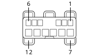

H44 Driver's side front door electric window controls
- Path
- Electrical equipment > Connectors > H Manual electric controls > H44 Driver's side front door electric window controls > H44 Driver's side front door electric window controls
- Kind
- connector pinout (pin -> wire colour -> other end)
- Applies to
- all engines; all production periods; only with equipment: High setup
- Interactive page
- https://sloeber94.github.io/elrnDB-lYpsln/en/#/2428431
Applies to: all engines; all production periods; only with equipment: High setup

Wiring | Colour |
|---|---|
BIANCO (white) |